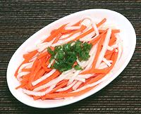

|
Daikon & Carrot PickleVietnam | ||||
| Makes: Effort: Sched: DoAhead: |
1 # * 1-1/4 hr Best |
This is perhaps the most popular pickle used in Banh Mi Sandwiches but has many other uses, especially as a garnish. It is easy to make, amd ready after an hour's rest. You can vary the ratio between Carrot and Daikon however you like. | |||
|
|
1 8 1 2 ------- 1/3 1-1/4 1 ------- |
# oz t t --- c c c --- |
Daikon Radish (1) Carrot Salt Sugar -- Pickle Sugar Vinegar (2) Water, warm --------------- |
Make - (1-1/4 hrs - 15 min work)
|